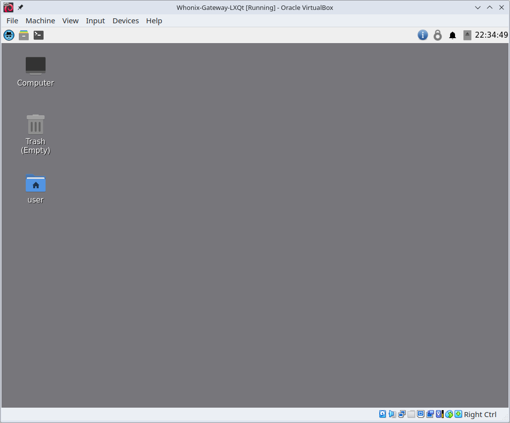

We believe security software like Whonix needs to remain Open Source and independent. Would you help sustain and grow the project? Learn more about our 11 year success story and maybe DONATE!
Users of WhonixDocumentationWhonix-WorkstationPrevious page: Users of WhonixIndex page: DocumentationNext page: Whonix-WorkstationWhat is Whonix-Gateway™?

The Whonix-Gateway is a software component that runs Tor, which moves data across multiple servers called Tor relays to keep users anonymous on the Internet, and it connects any virtual machine properly to the Internet using Tor only, while user applications should be run inside the Whonix-Workstation.
Whonix-Gateway Overview
Whonix-Gateway is software designed to run Tor (onion routing).
Tor is privacy-focused software [1] that routes internet traffic through multiple servers and encrypts it at each step to provide maximum privacy. Tor was initially deployed in October 2002 as a decentralized network operated by entities with diverse interests and trust assumptions, with its code released under a free and open software license. Today, thousands of volunteers run computer servers that keep users anonymous on the internet by moving data across many Tor servers, called Tor relays. The final hop moves the data to the end site, making it hard to trace. For more information, see Why does Whonix use Tor?
Every virtual machine properly connected to Whonix-Gateway is connected to the internet using Tor and only Tor.
Other than occasional visits, users typically spend minimal time on Whonix-Gateway.
Upon the initial boot of Whonix-Gateway, a user-friendly "First
Time Connection Wizard" will prompt the user. They will be given an
option to connect to the public Tor network (which is feasible for most
users) or to configure Bridges.
This feature is known as the Anon Connection Wizard. [2]
Apart from Tor configuration (for specific use cases only mentioned in the Documentation), controlling Tor (intended for advanced users), as well as installing updates, there is not much else to do on Whonix-Gateway. Activities such as running applications, especially the Tor Browser, should never be started on Whonix-Gateway. Instead, all user-centric applications ought to be launched from Whonix-Workstation to safely utilize the Tor network.
Figure: Whonix Operating System Design

Whonix is based on the security-focused Linux distribution Kicksecure. To learn more about Whonix, see Overview and Features.
Figure: Whonix-Gateway LXQt VM running in the virtualizer VirtualBox (real screenshot)

See Also
- Whonix-Workstation
- Configure (Private) (Obfuscated) Tor Bridges
- Whonix-Gateway Security Hardening
- Multiple Whonix-Gateway
- Access Whonix-Gateway Ports from the Host
- Non-bridge Censorship Circumvention Tools
- Whonix-Gateway System DNS
- Whonix-Gateway Traffic: Transparent Proxying
- SSH or SSHFS into Whonix-Gateway
- Transfer Files: Host to Whonix-Gateway or Whonix-Workstation via ISO Images
- Chaining Anonymizing Gateways
- Connections Between Whonix-Gateway and Whonix-Workstation
- Whonix-Gateway Firewall
- Tor
- Tor Entry Guards
Footnotes
Categories: Documentation